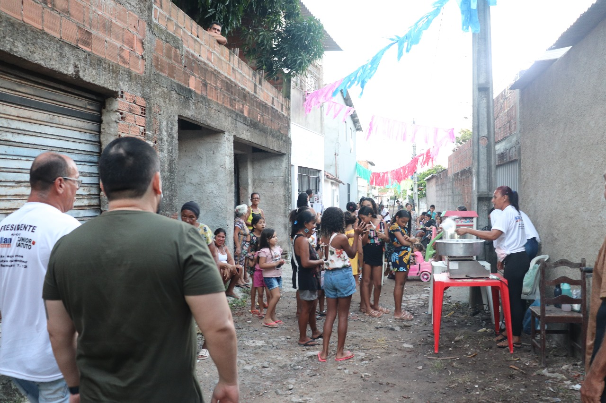
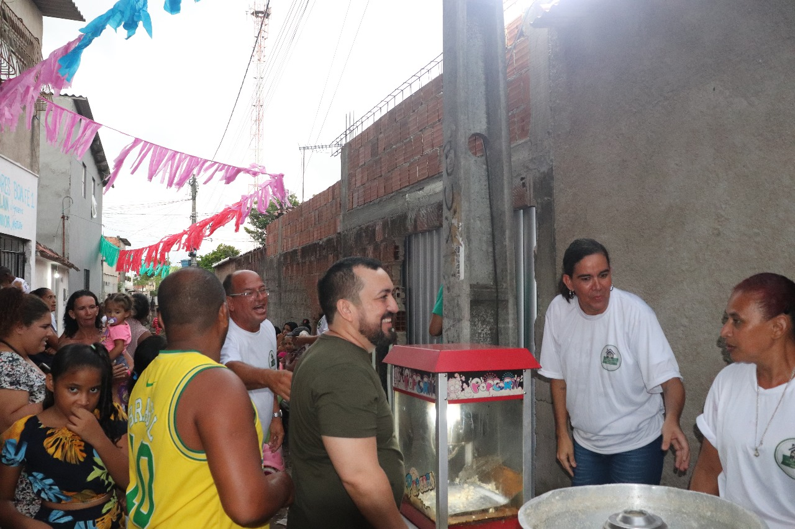
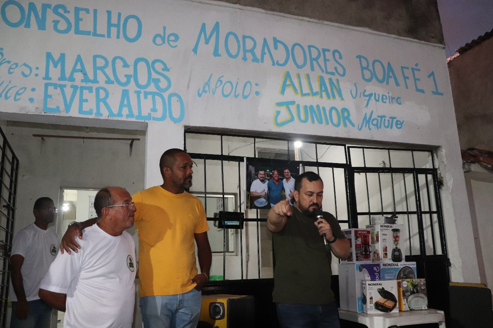
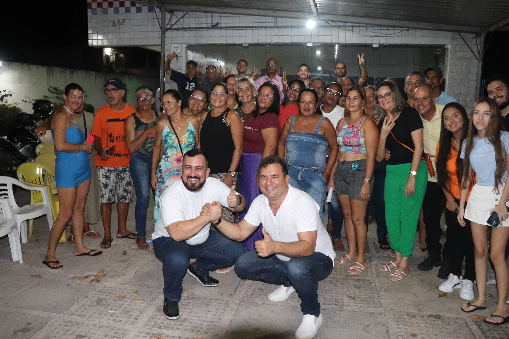
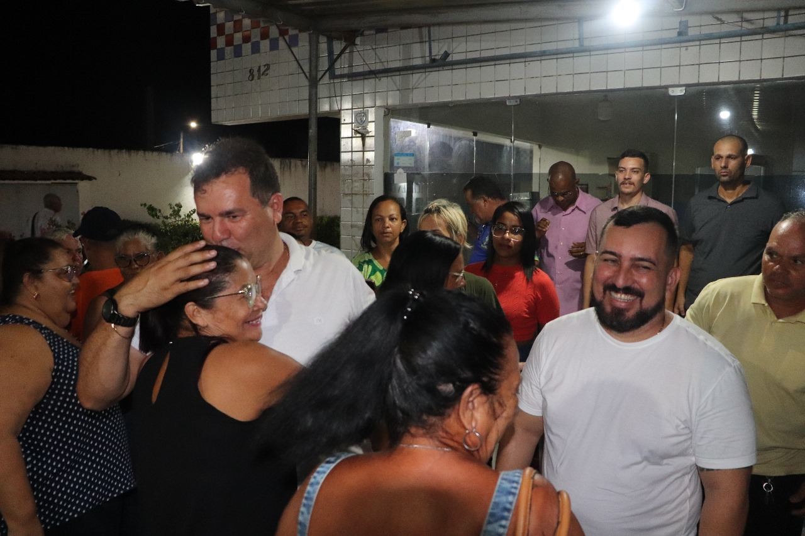
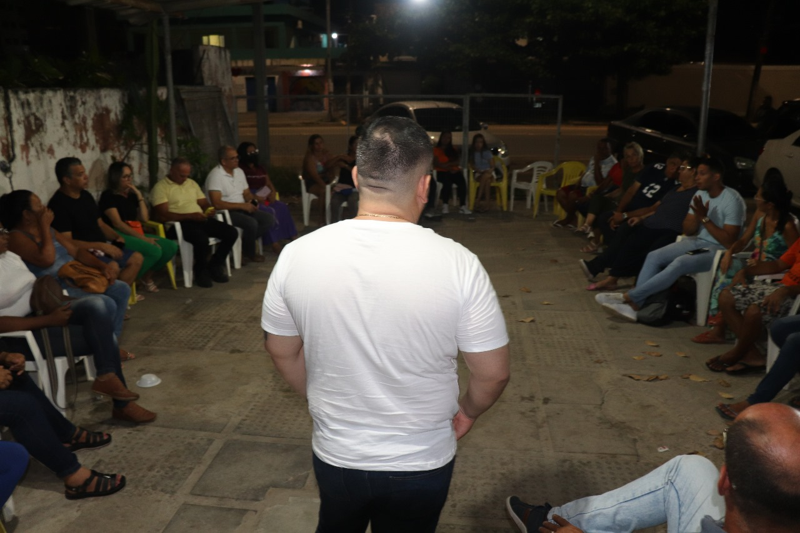
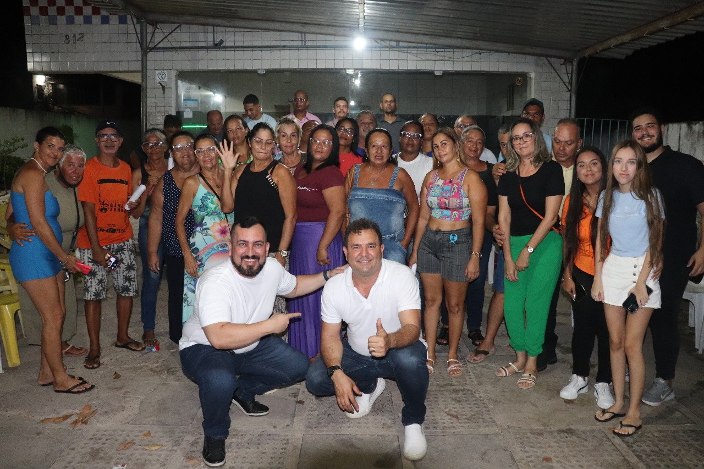

ALLAN SIQUEIRA
Evento beneficente realizado pelo nosso pré-candidato a vereador Allan Siqueira. O evento feito para o dia das mães na comunidade dá boa fé, que contamos com a presença do nosso pré-candidato Allan Siqueira, o presidente responsável pela ong Marcos, e as demais pessoas que ajudaram na organização e a realizar esse evento incrível para nossos queridos amigos








